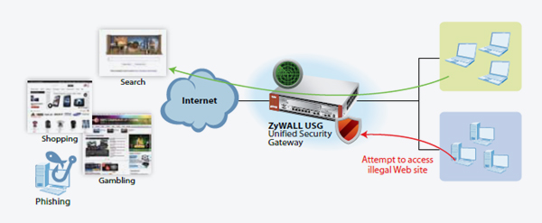

Question:.
How to Protect Employee from Unsafe Web Sites with Potential Malware Attacks?
Answer:
The content filter built into the ZyWALL USG Series is the best solution that collectively addresses the speed, variety and ever-changing nature of today’s threats, thanks to its large diverse community, constant threat discovery, blocking of unknown Web contents, real-time analysis and immediate signature updates.
- Identify new Web threats in real time: a deep, real-time inspection of the content, URLs, IP addresses and protocols is performed by cloud-based tools and researchers.
- Improved security efficiency and operations: the cloud-based community security is designed for incident prevention and threat analyzing, rating and blocking before they can penetrate networks and infect systems.
Powered by Blue Coat and Commtouch, the leading technology provider, ZyXEL’s Content Filter Solution can reduce costs and extend protection by combining a comprehensive, continuously integrated database featuring millions of URLs, IP addresses and domains.

|